The Modern Volley¶
Bill Mountford¶
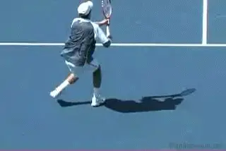
Volley techniques have changed in the "modern" game.
There is so much written about the "modern game," and how techniques and tactics have evolved and differ from the past. Most of this discussion has been over groundstrokes, especially the forehand, and the serve.
Less time has been spent doing the same for the volley. In part this is because of how infrequently the players are coming forward. But the fact is that when players do get to the net, or near to it anyway, the shots they play have evolved. This article will explore those changes and the modern techniques that are necessary for success.
Why aren't players rushing the net more regularly? Certainly the returns of serves at the professional level have taken a quantum leap forward in the past two decades. It used to be that servers, even at the top of the sport, would aim most deliveries toward the backhand and rarely would the return get blistered past them. This is positively no longer the case.
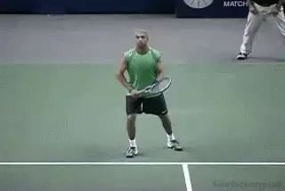
Aggressive returns have blunted serve and volley play.
Returning aggressively is an acquired skill, but it is also an attitude. Developing junior and even recreational players take their cue from the top professionals and have grown increasingly bold when returning serve, so this influence has certainly trickled down. This has subsequently made serving and volleying less appealing as a regular tactic. This change has become self-perpetuating. Developing players are not seeing the best players rushing the net. Therefore they do not rush the net themselves. Naturally, they tend to imitate the various baseline game-styles on display.
Polyester and the Net
The biggest technological advance in equipment since (probably) the oversize racquet has been the proliferation of polyester strings. As recently as five years ago, most professionals were still using natural gut. At the 2006 US Open, 75% of ALL players had their racquets strung with the exact same poly-string. Virtually all of the rest used a gut/polyester hybrid. Only a handful used all natural or synthetic gut.
The move to polyester is significant for two reasons. First, it is easier to nail groundstrokes at sonic speed with polyester string. The polyester strings give the ball more "bite" and enable players to hit sharply angled shots with considerable pace.
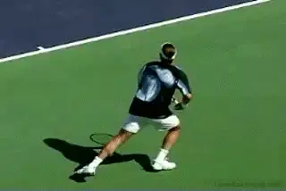
Are the new strings part of the explanation for the spins and angles?
One hypothesis I have considered is that there are differences between Roger Federer and Pete Sampras that can be explained by the change in string. The players use similar racket frames, but Federer is able to create more angles off the ground than Sampras ever did. Volleying, or trying to volley, against these fierce, dipping balls is particularly challenging. Yes, as some of the articles on Federer's forehand have explored, he has tremendous variety in the way he rotates the hand and arm, and this is partially responsible for his ability to hit phenomenal angles and spin. But is it possible that the bite and the resulting spin from the poly-string is one of the things that makes this possible?
How does all this relate to the volley itself? According to no less of an authority than John McEnroe, it is more difficult to "feel" the volley with polyester strings. While the polyester strings help on the serves, returns, and groundstrokes, they are not advantageous for the volleyer.
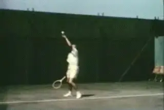
Video demonstration — the original video for this article was hosted on TennisPlayer.net.
The "Big Game" was a simple idea--get to net as quickly as possible.
In the Big Game era, Jack Kramer had a simple formula for "high percentage" tennis. Rush the net behind a deep, well-placed serve (almost always to the backhand). In the return game, approach down-the-line at the earliest opportunity (if not immediately on the return). Keep coming forward to volley while daring your opponent to attempt risky passing shots or lobs.
This style worked for players at all levels for decades. I was lucky enough to speak with Kramer's old doubles partner Ted Schroeder about this, before he sadly passed away a few months ago. I asked Ted how he would have played on clay against the best baseliners of this current era. The answer wasn't surprising. A former Wimbledon and US Nationals champion, the feisty Schroeder explained that he would rally crosscourt until he earned a short ball and then approach down-the-line and then follow that with a winning volley. "Simple as can be," Schroeder said. Maybe. But I am not so sure he would have felt that way after a few matches on center court against Rafael Nadal and David Nalbandian playing with the new rackets and strings.
So, then, why should we as coaches even urge our students to become proficient around the net if so few professionals are inclined to rush forward themselves? Our students often learn by watching their heroes even more than they learn by listening to their coaches, so succeeding in that effort can be a tall order. Is it worth it? Yes and I think the reasons are compelling.
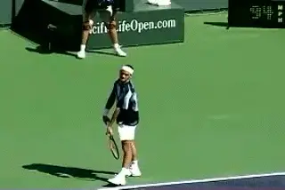
For Federer a few points at the net helped him beat Nadal.
With the ballistic nature of modern groundstrokes, knowing how to seize the initiative by moving forward after hurting an opponent is about more than just having a complete game. It's often the difference in top professional matches. Championship matches are often decided by ten points or less. Even when the actual number of total points decided at the net is relatively few, it can surely tip the balance.
People ask why Federer doesn't volley more, but take a look at what happens when he does. In the Wimbledon final versus Nadal, Federer won 133 points. Nadal won 113 points. Of that 20 point difference, Federer's positive margin on net points accounted for 13, or 65% of his winning margin. It was similar in Shanghai: Federer won 75 points, Nadal 65. Of those 10 points, Federer's margin at the net accounted for 8--this time 80% of the difference in the match.
Is the real point that Federer doesn't go to the net that much? Or is it that Federer knows when he can go to the net on opportunities that make the difference in wining the biggest titles in tennis?
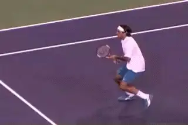
How hard would you work if you knew your volley could be the difference?
You don't just get lucky and somehow execute a huge swinging forehand volley, backed up by a stretch backhand volley angled winner, the way Federer did when Nadal was serving at 4-5 in the second set in Shanghai. The ability to make those kinds of shots at crucial moments in big matches can be traced back to the fundamentals of a player's development as a junior.
When you see one or two brilliant volleys, what you are actually seeing is the pay-off from hundreds of hours of concentrated effort. Interestingly this is the type of work that Federer still embraces, even as the top-ranked professional, as evidenced by his hiring of Tony Roche and the strides they have made in rounding out an already nearly-flawless game.
If you were an aspiring junior, would you put in that kind of work if you thought that it might give you the ten magic points you need to win the Masters or a Grand Slam title? Would you do it even if you knew you were going to play 90% of all your points from the baseline? Would it still be worth it? Maybe more juniors should ask themselves that question.
Even if few players will ever match Federer's grace at the net, it does not require brilliant technique to block a ball into the open court after you have worked your opponent six steps out of court with your huge serve and or groundstrokes. Andy Roddick has proved this at times, and there is a reason that he continues to work on his volleys and continues to use them more.
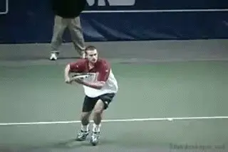
If you open the court far enough, it's easy to hit volley winners.
At a more prosaic level, what if your aggressive baseline game is just not as good as your opponent's aggressive baseline game? Then either you lose, or you need another option to help you win points and, perhaps more importantly, disrupt the natural rhythm of your confident opponent. Playing some good volleys, or even just the process of rushing the net and forcing your opponent to pass, can often accomplish this. Again, most players never find out if this option will work for them because they don't try it very often.
Tactically speaking, it makes sense to occasionally serve and volley against players who return powerful (first) serves with a block return to force them into playing a more ambitious return. Many returners are conditioned to block these hard serves back deep and down the middle of the court and that should make for an easy ball to volley when the returner is not expecting to see you there.
Finally, As Bobby Bernstein noted in an article on the pro return, players are playing returns of second serves (which are usually high kickers, in the men's game anyway) from well behind the baseline. A few serve and volley forays behind the second serve will force your opponent to become much more precise with his return. If the opponent is ten feet behind the baseline in the ad court, all it takes is a moderately competent volley to win the point.
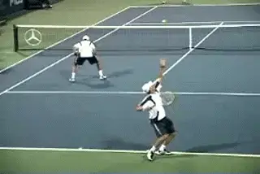
What if you actually want to play doubles?
Robert Kendrick used this play very effectively in his near-upset of Rafael Nadal during the 2006 Wimbledon. After his huge first serve, Kendrick often stayed back and looked to blast a forehand. But he would serve and volley behind his second serve to avoid an extended rally with Nadal. It was a clever and effective tactic.
Doubles
There are more reasons. Do you wish to become a solid doubles player? This is not always a leading priority for top-ranking juniors, but the reality of the situation is that becoming proficient in doubles can make the difference in determining who receives scholarship consideration from the best colleges. Certainly, becoming a sound doubles player could help you earn a spot in the starting lineup that otherwise might have gone to someone else.
Even on the pro tour the same principle applies. At any given time, there are a few dozen players making a good living playing professional doubles. Many of these players, no matter how talented, were unable to succeed financially in the insanely competitive world of tour singles.
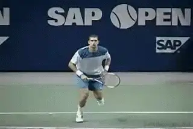
Many pro volleys can still be hit with "classic" technique.
Finally, it might be irrelevant to the players, but points at the net are often much better for spectators. The entertainment value is increased when the points are shorter and more dramatic, ending with a dominating volley or a spectacular pass. For this reason alone, more net play would be good for the game.
The Three Modern Volleys
How do you teach the Modern Volley? First of all, we have to define the stroke as "volleys" plural, and not simply volley. When I was growing up, the standard lessons and instructional articles would demonstrate how to hit "the" volley. It was a short-sighted viewpoint, because there are so many variances when playing a ball out of the air while moving forward.
Classic, Block, and Swing
I'll talk about a few more less common variations below, but let's start by looking at the three most common modern volleys. What I call the Classic Volley, the Block Volley, and the Swing Volley.
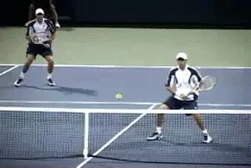
A block volley can deal with the speed of the modern game.
In the modern pro game there are fewer opportunities to hit volleys, but in most cases the best choice for these opportunities will still be a Classic Volley. This is first type of volley that most teaching professionals were taught as juniors. Sometimes this is called a punch volley, although I prefer the term "push" because it more closely describes that movement than it does a "punch." I use the word "push," because in the classic volley the shoulders rotate forward while driving or pushing the arm and racket toward and through the contact.
But what if the ball is really railed toward you? There is not enough time for the classic motion. The second type of volley, to deal with this type of ball, is a Block Volley. Maintain a firm grip (squeezing with your ring and pinky fingers) and keep your elbow near to your body. There is very little movement of the racquet head as simply trying to center the ball on your strings is of paramount importance.
If the ball is floating slowly through the air, the third option is the Swing Volley. Players should be encouraged to take a more ambitious backswing to assure they produce more racquet head speed. The best way to learn this Swing Volley is through trial and error. How long is too long on the swing? When you start to miss, you then shorten it up a little. Bob and Mike Bryan, the best doubles players in the world, take very lengthy swipes at slow moving balls.
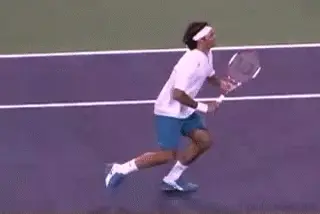
When the ball is slower and higher, expand the backswing.
The "Correct" Grip
So how should you hold the racquet for these variations? I have heard, and even engaged in, some arguments over the proper grip for most volleys. Some would argue that the Continental grip is ideal; others would state that there is room and time to switch to a stronger Eastern (or an Eastern hybrid, anyway) for forehands and an Eastern backhand grip for backhand volleys. My own opinion is that there is no such thing as the "correct" grip. Instead, there must be a "range of good."
A few examples of sensational net rushers who bucked the trend of the "correct grip" for volleys were Boris Becker and Patrick Rafter. Becker seemed to grip the racquet a little "too far under" on his forehand volley than would be considered conventional. Rafter had arguably the finest backhand volley over the past fifteen years, yet he hit many of them with a "weaker" Continental grip (perilously close to an Eastern forehand grip) for some backhand volleys.
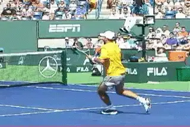
Rafter and Becker: two champions with slightly unconventional grips
Interestingly, both of these big, strong, athletic players used size 4 3/8" grips. Given their size and strength, they were able to grip the racquet handle "wrong" but hit the ball plenty "right."
This was a harbinger of the future because handle sizes are smaller than ever these days. Rafael Nadal, a muscular 6' 2" athlete, plays with a 4 1/4" grip. For perspective, Chrissie Evert played with a 4 5/8" grip throughout her career. This is relevant because with a smaller handle size it is easier to hold the racquet "incorrectly" yet still play volleys effectively. Manipulating the racquet with a smaller handle is easier. To be clear, a small handle does not automatically dictate a non-traditional grip, as Roger Federer uses a 4 3/8" grip and has classic technique.
Finding a "range of good" when deciding on the best and/or most versatile grip or grips for the volleys is something players and coaches need to work out individually. Floating your hand on the handle is becoming all the more common. A player with excellent technique for "normal" volleys (like Bob/Mike Bryan), could just as easily switch to a semi-western grip for a slow floater. In fact, they almost always do exactly that. The best way for any player to find their own brand of the "range of good" comes with repeated live-ball, or play-based, practice.
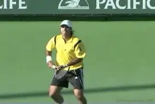
The swinging mid court volley is an established shot on the tour.
Other Modern Volleys
Aside from the three most common volleys, there are several other variations that are used frequently by top professionals and crafty club players alike. The most obvious is the Mid-Court Swing Volley. It is hit virtually like a high mid-court groundstroke, usually with the same grip that would be used for that groundstroke. Understanding the ideal strike zone is essential for playing this shot most effectively. This strike zone will vary considerably from player to player, although above the waist and below the head is a good starting point when learning to master this shot. Recognizing pace and seeing (open court) space are also essential, usually acquired, efficiencies necessary for this shot.
Another variation that is paramount to the modern style of play is the Drop Volley. While this shot has always existed, there are more opportunities to play this shot than ever before because: 1) players are being forced further out of neutral position by powerful groundstrokes, and 2) playing a "dropper" is easier against a rapidly dipping topspin pass than a conventional deep volley would be. Making sure players learn how and, more importantly, when to play this shot is crucial. Baseliners, especially those who expect to succeed on clay courts, thrive when they understand how/when to play this shot.
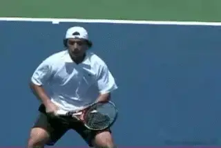
The modern game may actually offer more drop volley opportunities.
The Defend Yourself Volley is necessary to learn right away in the modern game. Fear of being struck by the ball is a very real concern for most players, and the pace of shot is only getting harder these days. Teaching your student how to defend her entire body with the backhand side of the racquet face (while flaring the elbow of the hitting arm out as needed) is crucial. By learning this technique, they will know that they are (reasonably) safe, even against a big hitter. That peace of mind matters. Besides, it is a shot that one needs to play quite often in fast-paced doubles.
The Nothing Volley is handy. A "nothing volley" is a shot with nothing on it. Players ought to become comfortable simply "dumping" the ball into open space (in singles) or softly at the feet of other players positioned at net (in doubles). It is a "hands" shot, and with practice a player will know when and how to control the length of this soft shot. It is not a drop volley, nor is it a block volley. Often, a player's feet will be moving independently of the hands when attempting this shot.
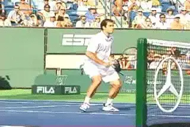
The Flick Volley, perfected by Pete Sampras.
The Flick Volley might have been created by Ilie Nastase, but it was perfected (off the forehand side anyway) by Pete Sampras. Roger Federer and Pat Rafter are/were experts of this specific shot as well. It can surely come in handy at the 3.0-level of ladies club tennis though. When the ball is well away from the volleyer, it is normal to reach for it and try to simply block it back. Instead, players might learn to take a flat swipe at the ball, creating pace off this shot when nothing more than a defensive shot is expected. The effect can be startling. It robs the opponent of time. Consider that simply blocking the ball back is usually not going to get it done in today's game, so a more aggressive mindset really helps. You are at net to win the point abruptly, and this unconventional volley will help in that regard.
Development
The best advice that I could suggest to fellow coaches about developing players who will grow comfortable around the net is to give them plenty of play-based opportunities to work on their shots. It should be experiential.
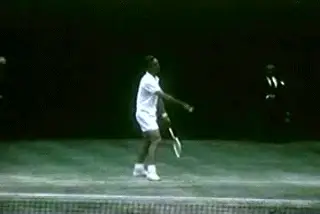
Going to the net at every opportunity: a path to mastery?
I heard a story about Rod Laver recently that applies directly to this developmental concept. As a young player over a half-century ago, Laver's volleys were considered suspect. He was challenged by a coach to rush the net behind every serve and as often as possible on return games. The Rocket followed this advice, although by doing so he lost dozens of practice sets to inferior competition. In the process, however, he learned how to move around the net, what shots to play when, developed the confidence to move forward during crucial moments, and eventually mastered the art of net play. Rod Laver was certainly a crafty volleyer, but he needed to get up there and "give it a go" in thousands of "live point" situations before he eventually got it.
This task may be all the more challenging for the modern player, but the process is similar. Rod Laver's willingness to develop his forecourt game as a young player is an extreme example. It is hard to imagine a young player today choosing to rush the net at every opportunity so that he masters the nuances of shots that he will rarely play. In some aspects, the game has definitely changed. However, it is not a stretch to recognize that a player who is incapable of finishing points around the net will be vulnerable against relative competition. As coaches, we need to put players in position to develop confidence and belief.
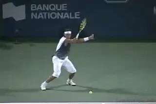
Nadal: the intention to rush the net and become number One.
Frankly, I believe that Rafael Nadal announced to the world that he intends to eventually become the #1 player- and a future Wimbledon champion- by his willingness to rush the net at the most crucial moments against his greatest rival. In the Wimbledon final against Federer, Nadal served and volleyed on a break point early in the fourth set. Federer mis-hit a floating return that was too low for an overhead but high enough to create difficulty on the volley. Nadal missed this shot by a mile, but his message was clear: To become the best, it will require a more versatile style of attacking.
Just as the "modern forehand" has evolved over the years, the mindset and techniques for playing volleys has also changed. Accept that mastery, or at least improvement, will only come after ample opportunities to fail. Devoting portions of practice sessions to developing skills in the forecourt area- but without insisting on following the exact structure of the "correct" volley technique- is essential to developing Modern Players who will succeed at their highest level.
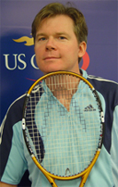
2001. He is a graduate of the USA Tennis High Performance Coaching Program and is a "master trainer" for the USTA's Recreation Coaches Workshop initiative. His articles have been published in several industry magazines. He writes the popular weekly "Ask Bill" column for the USTA.com. Click here to ask him a question! Mountford@usta.com